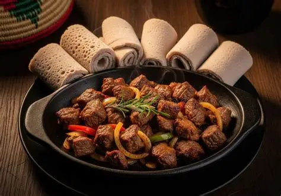

Tibs is a popular Ethiopian dish made of sautéed meat usually beef or lamb cooked with onions, peppers, and aromatic spices. It's flavorful, quick to prepare, and often served sizzling hot, making it a favorite for both everyday meals and celebrations.